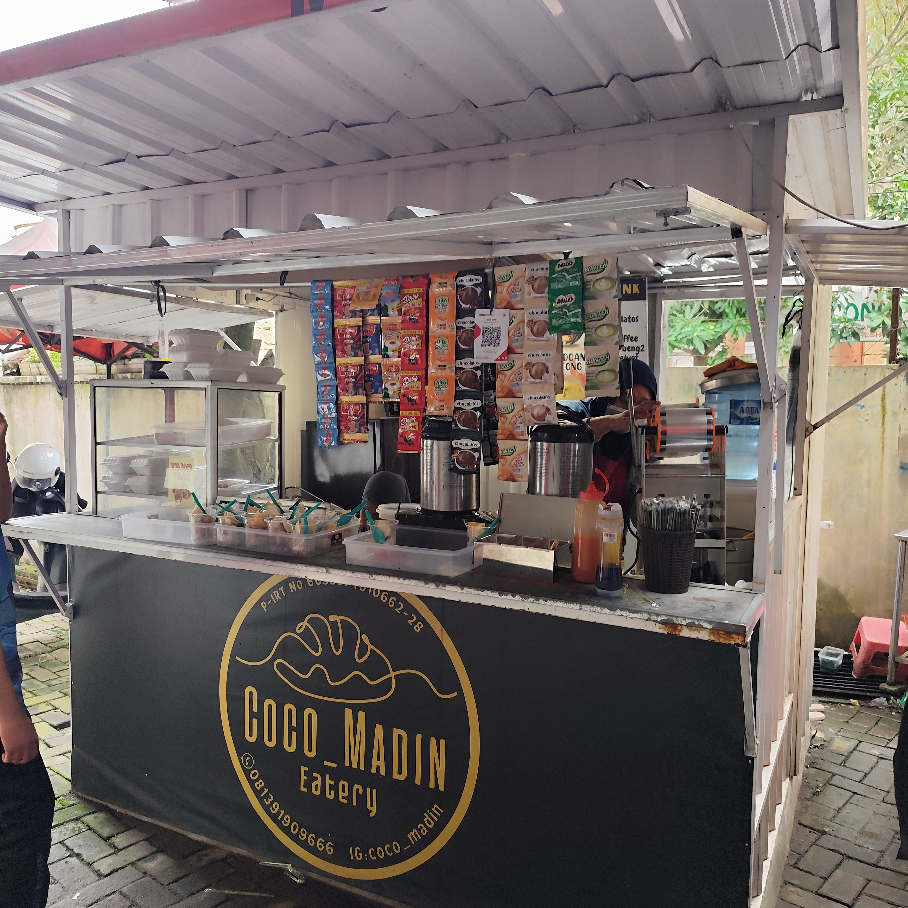
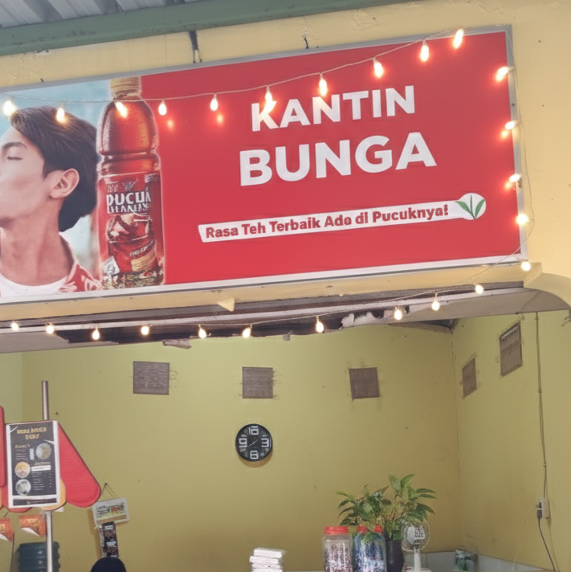
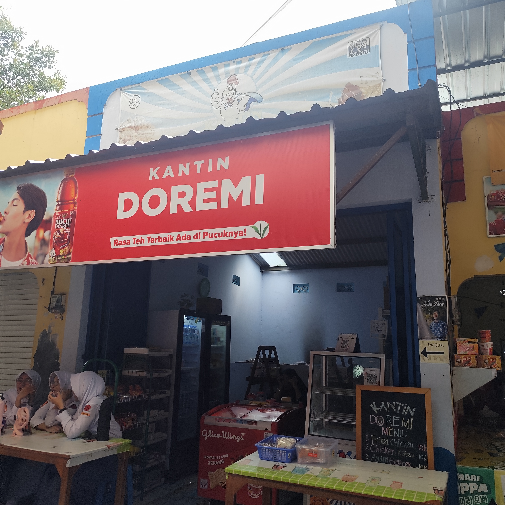
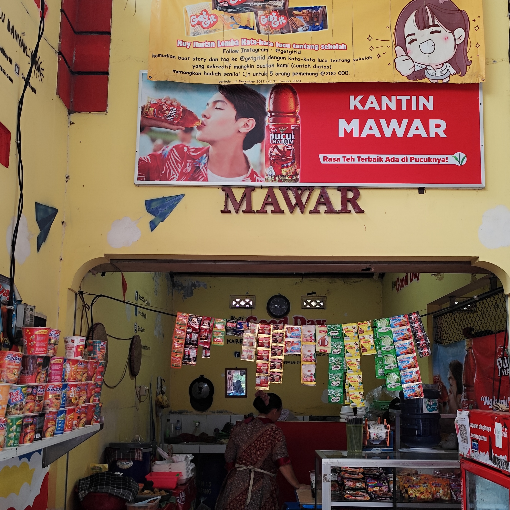
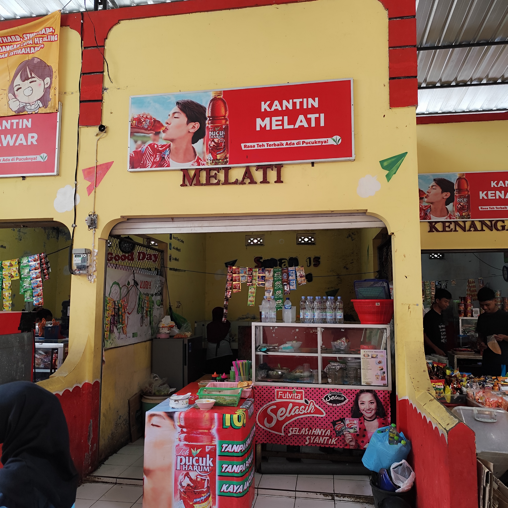
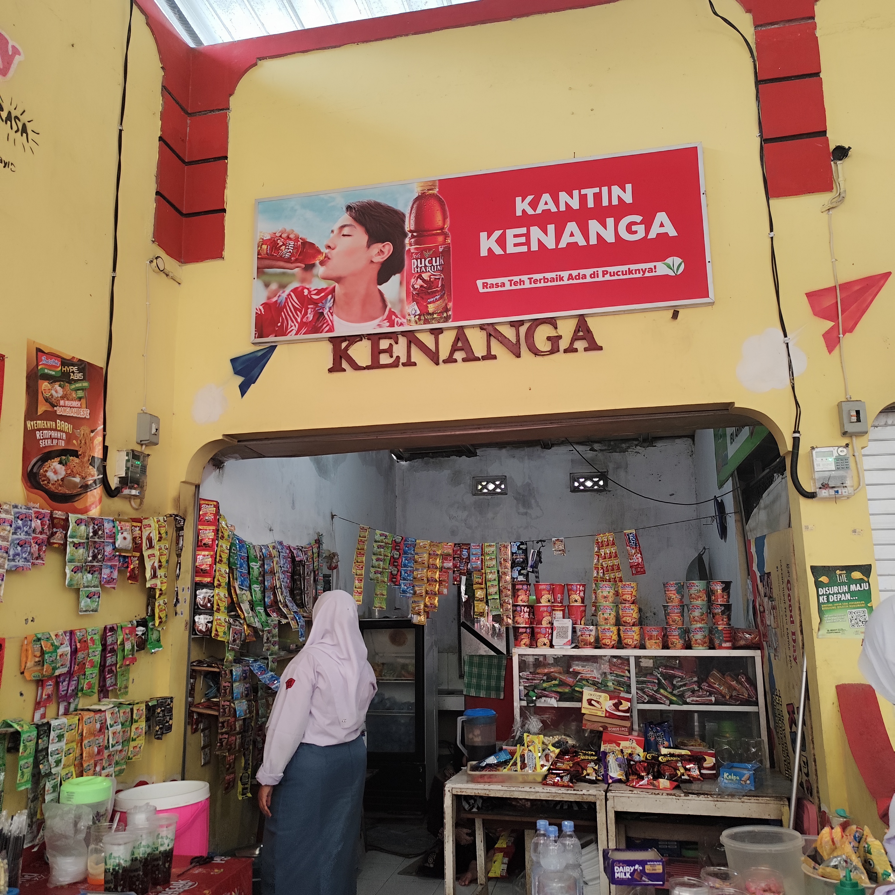
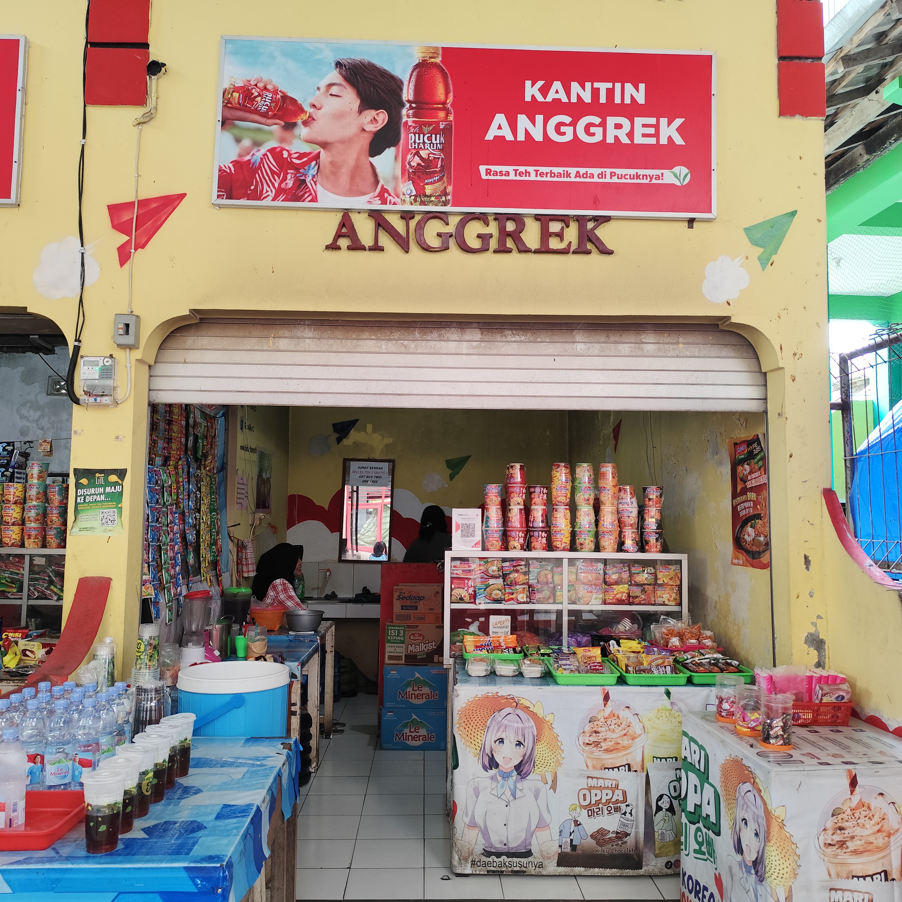

SMA NEGERI 15 SEMARANG
Pilih Menu Favorite mu di Kantin

Kantin Cocomadin
Nikmati Es teh segar, ayam geprek, dan pentol - favorit siswa!

Kantin Bunga
Matcha Oreo bikin ketagihan, ayam kremes kriuk, dan makaroni marsha yang pedasnya bikin nagih!

Kantin Doremi
Harmoni rasa! Ayam katsu kriuk, risol sosis mayo lumer, geprek pedas gurih bikin nangis... tapi pengen balik lagi!

Kantin Mawar
Nikmati pisang goreng, ayam geprek dan katsu, serta Mie kuah untuk menghangatkan tubuh.

Kantin Melati
Nyaman saat hujan! Soto ayam hangat, pecel lezat, gorengan kriuk... pasangan sempurna buat hari dingin!

Kantin Kenangan
Aroma menggoda! Nasi goreng spesial, onigiri selimuti rumput laut, gorengan hangat bikin perut lapar!

Kantin Anggrek
Cocok untuk bersantai dengan berbagai varian minuman dan makanan yang lezat.